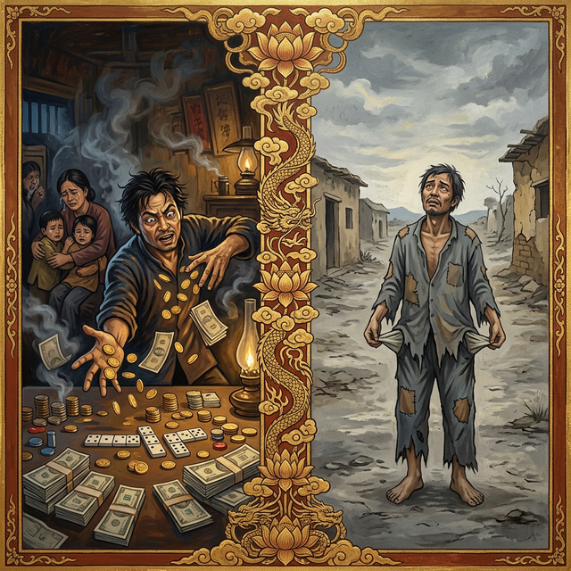
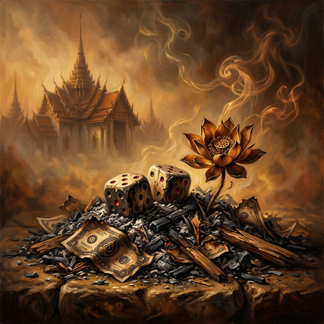
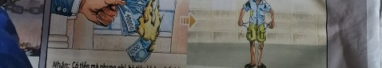

Los Dados del VacíoThe Dice of the VoidI dadi del vuoto虚空之骰نرد الفراغКости пустотыDie Würfel der LeereLes Dés du Vide虚無のサイコロOs Dados do VazioXúc Xắc Hư Không
Quien apuesta el sustento en la mesa del azar siembra el vacío en sus bolsillos y el frío en su hogar del mañana. Whoever bets their livelihood on the table of chance sows emptiness in their pockets and cold in their home of tomorrow. Kẻ đánh cược kế sinh nhai trên bàn cờ bạc gieo sự trống rỗng vào túi tiền và cái lạnh lẽo vào mái ấm tương lai. Wer seinen Lebensunterhalt am Tisch des Zufalls verwettet, sät Leere in seine Taschen und Kälte in sein Heim von morgen. Кто ставит средства к существованию на стол удачи, сеет пустоту в своих карманах и холод в своём доме завтрашнего дня. Celui qui mise ses moyens de subsistance sur la table du hasard sème le vide dans ses poches et le froid dans son foyer de demain. Chi scommette il proprio sostentamento sul tavolo del caso semina il vuoto nelle proprie tasche e il freddo nella propria casa di domani. Quem aposta o sustento na mesa do azar semeia o vazio nos seus bolsos e o frio no seu lar de amanhã. 運頼みのテーブルに生計を賭ける者は、自らのポケットに虚無を、明日の家には冷たさを播く。 在运气之桌上赌上生计者，在自己的口袋里播下空虚，在明日的家中播下寒冷。 من يراهن على قوت يومه على طاولة المصادفة يزرع الفراغ في جيوبه والبرد في بيته غداً.
Entre las adicciones que marchitan el alma y disuelven la fortuna construida con esfuerzo, la pasión por el juego ocupa un lugar de sombra profunda. Quien entrega el dinero —que es energía de vida y sustento familiar— a los vientos del azar, despreciando el valor del trabajo y la previsión, está cavando un pozo de miseria que su propia alma deberá habitar...
Cada moneda lanzada con la fiebre del lucro fácil, cada apuesta que sacrifica el bienestar de los seres queridos en busca de una fortuna ilusoria, se convierte en un eslabón de una cadena de escasez. La energía del juego no crea riqueza, solo la consume, dejando tras de sí un rastro de desolación y engaño.
La ley universal establece con claridad meridiana que quien malgasta sus bienes en el azar, ignorando las necesidades de los suyos y cegado por la codicia, renacerá en la indigencia más absoluta. Sus manos no podrán retener la riqueza, y sus bolsillos estarán siempre vacíos, experimentando el frío y el hambre de quien un día quemó su propio refugio por una promesa de oro que nunca llegó.
Among the addictions that wither the soul and dissolve fortune built with effort, the passion for gambling occupies a place of deep shadow. Whoever surrenders money —which is life energy and family sustenance— to the winds of chance, despising the value of work and foresight, is digging a pit of misery that their own soul must inhabit...
Every coin tossed with the fever of easy gain, every bet that sacrifices the well-being of loved ones in search of an illusory fortune, becomes a link in a chain of scarcity. The energy of gambling does not create wealth, it only consumes it, leaving behind a trail of desolation and deceit.
Universal law establishes with crystal clarity that whoever wastes their assets on chance, ignoring the needs of their own and blinded by greed, will be reborn in the most absolute indigence. Their hands will not be able to hold wealth, and their pockets will always be empty, experiencing the cold and hunger of those who one day burned their own shelter for a promise of gold that never arrived.
Tra le dipendenze che appassiscono l'anima e dissolvono la fortuna costruita con fatica, la passione per il gioco occupa un posto di ombra profonda. Chi consegna il denaro —che è energia vitale e sostentamento familiare— ai venti del caso, disprezzando il valore del lavoro e della previdenza, sta scavando un pozzo di miseria che la sua stessa anima dovrà abitare...
Ogni moneta lanciata con la febbre del facile guadagno, ogni scommessa che sacrifica il benessere dei propri cari in cerca di una fortuna illusoria, diventa un anello di una catena di scarsità. L'energia del gioco non crea ricchezza, la consuma soltanto, lasciando dietro di sé una scia di desolazione e inganno.
La legge universale stabilisce con estrema chiarezza che chi spreca i propri averi nel gioco d'azzardo, ignorando le necessità dei propri cari e accecato dall'avidità, rinascerà nell'indigenza più assoluta. Le sue mani non potranno trattenere la ricchezza, e le sue tasche saranno sempre vuote, sperimentando il freddo e la fame di chi un giorno ha bruciato il proprio rifugio per una promessa d'oro mai arrivata.
在那些枯萎灵魂、消解辛苦积累的财富的瘾癖中，对赌博的痴迷占据着阴影深重的位置。凡是将金钱——那是生命的能量和家庭的支柱——交给运气的狂风，蔑视劳作和远见的价值者，都在挖掘一个深渊，他的灵魂必将居住其中……
每一枚带着对横财的狂热掷出的硬币，每一次为寻求虚幻财富而牺牲亲人福祉的赌博，都成为匮乏之链的一环。赌博的能量不创造财富，它只消耗财富，留下满地的荒凉与欺骗。
宇宙法则再清楚不过地规定：凡是无视家人的需求、因贪婪而盲目、在运气上挥霍资产者，来世必将陷入最彻底的贫困。他的双手无法握住财富，他的口袋永远是空的，体验着那些曾为一场从未实现的黄金诺言而焚烧自己避难所的人所经历的寒冷与饥饿。
من بين الإدمانات التي تذبل الروح وتذيب الثروة المبنية بالجهد، يحتل الشغف بالقمار مكاناً من الظل العميق. من يسلم المال —الذي هو طاقة حياة وقوت عائلي— لرياح المصادفة، محتقراً قيمة العمل والبصيرة، فإنه يحفر بئراً من البؤس يجب على روحه أن تسكنها...
كل عملة تُلقى بحمى الربح السهل، وكل رهان يضحي برفاهية الأحباء بحثاً عن ثروة وهمية، يصبح حلقة في سلسلة من الندرة. طاقة القمار لا تخلق ثروة، بل تستهلكها فقط، تاركة وراءها أثراً من الخراب والخداع.
يقضي القانون الكوني بوضوح تام أن من يبذر أصوله في المصادفة، متجاهلاً احتياجات ذويه وأعماه الجشع، سيولد من جديد في فقر مدقع. لن تستطيع يداه الاحتفاظ بالثروة، وستكون جيوبه فارغة دائماً، مختبراً برد وجوع من أحرق يوماً مأواه الخاص من أجل وعد بذهب لم يصل أبداً.
Среди зависимостей, иссушающих душу и растворяющих богатство, нажитое трудом, страсть к игре занимает место глубокой тени. Тот, кто отдает деньги — которые являются энергией жизни и семейным пропитанием — на ветер удачи, презирая ценность труда и предусмотрительность, роет яму нищеты, в которой придется обитать его собственной душе...
Каждая монета, брошенная в лихорадке легкой наживы, каждая ставка, приносящая в жертву благополучие близких в поисках иллюзорного богатства, становится звеном в цепи дефицита. Энергия игры не создает богатства, она только потребляет его, оставляя после себя след опустошения и обмана.
Вселенский закон устанавливает предельно ясно: тот, кто растрачивает свои активы на удачу, игнорируя нужды своих близких и ослепленный жадностью, переродится в абсолютной нищете. Его руки не смогут удерживать богатство, а карманы всегда будут пусты, он познает холод и голод того, кто однажды сжег собственное убежище ради обещания золота, которое так и не пришло.
Unter den Abhängigkeiten, die die Seele verwelken lassen und das mit Mühe aufgebaute Vermögen auflösen, nimmt die Leidenschaft für das Spiel einen Platz im tiefen Schatten ein. Wer Geld — das Lebensenergie und Familienerhalt ist — den Winden des Zufalls überlässt und dabei den Wert von Arbeit und Vorsorge verachtet, gräbt eine Grube des Elends, die seine eigene Seele bewohnen muss...
Jede Münze, die im Fieber des leichten Gewinns geworfen wird, jede Wette, die das Wohlbefinden der Lieben auf der Suche nach einem illusorischen Reichtum opfert, wird zu einem Glied in einer Kette des Mangels. Die Energie des Glücksspiels schafft keinen Wohlstand, sie verbraucht ihn nur und hinterlässt eine Spur der Verwüstung und des Betrugs.
Das universelle Gesetz legt mit kristallklärer Deutlichkeit fest, dass wer seine Vermögenswerte an den Zufall verschwendet, die Bedürfnisse der Seinen ignoriert und von Gier geblendet ist, in absolutester Armut wiedergeboren wird. Seine Hände werden keinen Reichtum halten können, und seine Taschen werden immer leer sein, wobei er die Kälte und den Hunger derer erfährt, die eines Tages ihre eigene Zuflucht für ein Goldversprechen verbrannten, das niemals eintraf.
Parmi les addictions qui flétrissent l'âme et dissolvent la fortune bâtie avec effort, la passion pour le jeu occupe une place d'ombre profonde. Quiconque livre l'argent — qui est énergie de vie et subsistance familiale — aux vents du hasard, en méprisant la valeur du travail et de la prévoyance, creuse un puits de misère que sa propre âme devra habiter...
Chaque pièce lancée avec la fièvre du gain facile, chaque pari qui sacrifie le bien-être des êtres chers à la recherche d'une fortune illusoire, devient un maillon d'une chaîne de pénurie. L'énergie du jeu ne crée pas de richesse, elle ne fait que la consommer, laissant derrière elle une traînée de désolation et de tromperie.
La loi universelle établit avec une clarté limpide que quiconque gaspille ses biens au hasard, ignorant les besoins des siens et aveuglé par l'avarice, renaîtra dans l'indigence la plus absolue. Ses mains ne pourront retenir la richesse, et ses poches seront toujours vides, éprouvant le froid et la faim de celui qui un jour a brûlé son propre refuge pour une promesse d'or qui n'est jamais arrivée.
魂を萎れさせ、努力によって築かれた富を溶かしてしまう依存症の中でも、ギャンブルへの情熱は深い影を落としています。生命のエネルギーであり家族の糧であるお金を、労働と先見の明の価値を軽んじて運の風に委ねる者は、自らの魂が住まうべき悲惨の穴を掘っているのです……
容易な利益への熱に浮かされて投げられる硬貨の一つ一つ、幻の富を求めて愛する者たちの幸福を犠牲にする賭けの一つ一が、欠乏の鎖の輪となります。ギャンブルのエネルギーは富を創造せず、ただそれを消費し、荒廃と欺きの跡を残すだけです。
宇宙の法則は水晶のような明晰さで定めています：自らの資産を運に浪費し、家族の必要を無視して強欲に目を眩ませる者は、絶対的な貧困の中に生まれ変わるのだと。その手は富を保持することができず、ポケットは常に空であり、かつて決して届かない黄金の約束のために自らの避難所を焼き払った者の寒さと飢えを体験することになるのです。
Entre as dependências que murcham a alma e dissolvem a fortuna construída com esforço, a paixão pelo jogo ocupa um lugar de sombra profunda. Quem entrega o dinheiro — que é energia de vida e sustento familiar — aos ventos do acaso, desprezando o valor do trabalho e da previsão, está cavando um poço de miséria que a sua própria alma deverá habitar...
Cada moeda lançada com a febre do lucro fácil, cada aposta que sacrifica o bem-estar dos entes queridos em busca de uma fortuna ilusória, torna-se um elo de uma cadeia de escassez. A energia do jogo não cria riqueza, apenas a consome, deixando para trás um rastro de desolação e engano.
A lei universal estabelece com clareza meridiana que quem esbanja os seus bens no azar, ignorando as necessidades dos seus e cegado pela ganância, renascerá na indigencia mais absoluta. As suas mãos não poderão reter a riqueza, e os seus bolsos estarão sempre vazios, experimentando o frio e a fome de quem um día queimou o seu próprio refúgio por uma promessa de ouro que nunca chegou.
Trong số các chứng nghiện làm héo úa tâm hồn và tiêu tan gia sản được xây dựng bằng nỗ lực, niềm đam mê cờ bạc chiếm một vị trí u tối sâu sắc. Kẻ nào giao phó tiền bạc — vốn là năng lượng sống và kế sinh nhai của gia đình — cho những cơn gió của sự may rủi, coi thường giá trị của lao động và sự nhìn xa trông rộng, kẻ đó đang đào một hố sâu của sự khốn cùng mà chính linh hồn mình sẽ phải cư ngụ...
Mỗi đồng xu được ném ra với cơn sốt trục lợi dễ dàng, mỗi ván cược hy sinh hạnh phúc của những người thân yêu để tìm kiếm một vận may ảo huyền, đều trở thành một mắt xích trong chuỗi khan hiếm. Năng lượng của cờ bạc không tạo ra sự giàu có, nó chỉ tiêu thụ nó, để lại sau lưng một dấu vết của sự hoang tàn và lừa dối.
Luật phổ quát thiết lập với sự minh bạch rõ ràng rằng kẻ nào lãng phí tài sản của mình vào sự may rủi, phớt lờ nhu cầu của người thân và bị mù quáng bởi lòng tham, sẽ tái sinh trong cảnh bần cùng tuyệt đối. Đôi bàn tay kẻ đó sẽ không thể giữ được của cải, và túi tiền sẽ luôn trống rỗng, nếm trải cái lạnh và cái đói của kẻ một ngày nào đó đã đốt cháy chính nơi trú ẩn của mình vì một lời hứa về vàng bạc không bao giờ đến.
El Tahúr del Abismo
The Gambler of the Abyss
Lo Scommettitore dell'Abisso
深渊赌徒
مقامر الهاوية
Игрок бездны
Der Spieler des Abgrunds
Le Joueur de l'Abîme
深淵の博徒
O Taful do Abismo
Kẻ Đánh Bạc Với Vực Thẳm
En una ciudad próspera y llena de vida, vivía un hombre llamado Vinh que heredó una de las mayores fortunas del reino. Sin embargo, Vinh no encontraba placer en el comercio ni en la caridad; solo su sangre hervía cuando los dados rodaban sobre la seda verde. Convencido de que la suerte era una amante que podía domesticar, comenzó a apostar sus tierras, sus almacenes y, finalmente, el techo que cubría a sus tres hijos...
Una noche, en una oscura taberna, Vinh lo apostó todo a un solo lanzamiento: las joyas de su esposa y el pan de todo un año. Los dados hablaron con crueldad y la fortuna desapareció como el humo. Vinh miró sus manos vacías y, en lugar de arrepentirse, maldijo al cielo reclamando una revancha que la vida nunca le concedió.
En su siguiente existencia, Vinh nació en una aldea azotada por la sequía. Pasó su juventud soñando con tesoros escondidos mientras su estómago rugía de dolor. Cada vez que una moneda llegaba milagrosamente a sus manos, la perdía o le era robada antes de que pudiera comprar un solo grano de arroz. Moría de frío en el invierno, mirando con ojos febriles las casas iluminadas, comprendiendo por fin que el vacío que sentía no era mala suerte, sino el eco vacío de la riqueza que un día despreció en la mesa de juego.
In a prosperous and lively city, there lived a man named Vinh who inherited one of the greatest fortunes in the kingdom. However, Vinh found no pleasure in commerce or charity; only his blood boiled when the dice rolled over the green silk. Convinced that luck was a mistress he could domesticate, he began to bet his lands, his warehouses and, finally, the roof that covered his three children...
One night, in a dark tavern, Vinh bet everything on a single throw: his wife's jewelry and a whole year's bread. The dice spoke with cruelty and the fortune vanished like smoke. Vinh looked at his empty hands and, instead of repenting, cursed the sky claiming a rematch that life never granted him.
In his next existence, Vinh was born in a village hit by drought. He spent his youth dreaming of hidden treasures while his stomach roared with pain. Every time a coin miraculously reached his hands, it was lost or stolen before he could buy a single grain of rice. He died of cold in winter, looking with feverish eyes at the illuminated houses, finally understanding that the emptiness he felt was not bad luck, but the empty echo of the wealth he one day despised at the gambling table.
In una città prospera e vivace, viveva un uomo di nome Vinh che ereditò una delle più grandi fortune del regno. Tuttavia, Vinh non trovava piacere nel commercio né nella carità; solo il suo sangue ribolliva quando i dadi rotolavano sulla seta verde. Convinto che la fortuna fosse un'amante che poteva addomesticare, iniziò a scommettere le sue terre, i suoi magazzini e, infine, il tetto che copriva i suoi tre figli...
Una notte, in un'oscura taverna, Vinh scommise tutto su un unico lancio: i gioielli della moglie e il pane di un anno intero. I dadi parlarono con crudeltà e la fortuna svanì come fumo. Vinh guardò le sue mani vuote e, invece di pentirsi, maledisse il cielo chiedendo una rivincita che la vita non gli concesse mai.
Nella sua esistenza successiva, Vinh nacque in un villaggio colpito dalla siccità. Passò la giovinezza sognando tesori nascosti mentre il suo stomaco ruggiva dal dolore. Ogni volta che una moneta arrivava miracolosamente alle sue mani, veniva persa o rubata prima che potesse comprare un solo chicco di riso. Morì di freddo in inverno, guardando con occhi febbrili le case illuminate, comprendendo infine che il vuoto che sentiva non era sfortuna, ma l'eco vuota della ricchezza che un giorno aveva disprezzato al tavolo da gioco.
在一个繁荣而充满活力的城市里，住着一个名叫永的男人，他继承了王国最丰厚的遗产之一。然而，永在经商或行善中找不到乐趣；只有当色子在绿丝绒上翻滚时，他的血液才会沸腾。由于坚信运气是可以驯服的情妇，他开始赌上他的土地、仓库，最后甚至是为他三个孩子遮风避雨的屋顶……
一天深夜，在一家阴暗的酒馆里，永在一掷之间赌上了所有：他妻子的珠宝和全年的口粮。色子残酷地开口了，财富如烟雾般消散。永望着自己空空如也的双手，不但没有悔改，反而诅咒上天，要求一场生命从未给予他的翻盘。
来世，永出生在一个饱受干旱之苦的村庄。他在腹部的饥饿绞痛中度过了梦想着埋藏宝藏的青春。每当一枚硬币奇迹般地落入他手中，他还没来得及买下一粒米，钱就丢了或被偷了。他在冬天的寒冷中死去，发烧的双眼盯着那些灯火通明的房子，终于明白他所感受到的空虚并非运气不好，而是他曾掷在赌桌上的那些被他蔑视的财富所留下的空洞回响。
في مدينة مزدهرة ونابضة بالحياة، عاش رجل يُدعى فينه ورث واحدة من أعظم الثروات في المملكة. ومع ذلك، لم يجد فينه متعة في التجارة ولا في الأعمال الخيرية؛ بل كان دمه يغلي فقط عندما تتدحرج النرد على الحرير الأخضر. اقتناعاً منه بأن الحظ كان عشيقة يمكنه ترويضها، بدأ يراهن على أراضيه ومخازنه، وأخيراً، السقف الذي يغطي أطفاله الثلاثة...
ذات ليلة، في حانة مظلمة، راهن فينه على كل شيء في رمية واحدة: مجوهرات زوجته وخبز عام كامل. تكلم النرد بقسوة وتلاشت الثروة كالدخان. نظر فينه إلى يديه الفارغتين، وبدلاً من التوبة، لعن السماء مطالباً بمباراة ثانية لم تمنحه إياها الحياة أبداً.
في وجوده التالي، وُلد فينه في قرية ضربها الجفاف. قضى شبابه يحلم بكنوز مخبأة بينما كانت معدته تصرخ من الألم. في كل مرة تصل فيها عملة معدنية إلى يديه بمعجزة، كانت تضيع أو تسرق منه قبل أن يتمكن من شراء حبة أرز واحدة. مات من البرد في الشتاء، ينظر بعيون محمومة إلى البيوت المضاءة، ويفهم أخيراً أن الفراغ الذي شعر به لم يكن حظاً سيئاً، بل كان صدى الفراغ للثروة التي احتقرها يوماً ما على طاولة القمار.
В процветающем и оживленном городе жил человек по имени Винь, унаследовавший одно из величайших состояний в королевстве. Однако Винь не находил удовольствия ни в торговле, ни в благотворительности; только его кровь закипала, когда кости катились по зеленому шелку. Убежденный, что удача — это любовница, которую он может приручить, он начал ставить свои земли, свои склады и, наконец, крышу, которая укрывала троих его детей...
Однажды ночью в темной таверне Винь поставил все на один бросок: украшения жены и хлеб на целый год. Кости заговорили жестоко, и состояние растаяло, как дым. Винь посмотрел на свои пустые руки и вместо того, чтобы раскаяться, проклял небеса, требуя реванша, который жизнь так и не предоставила ему.
В следующем существовании Винь родился в деревне, пораженной засухой. Свою юность он провел в мечтах о скрытых сокровищах, пока его желудок ныл от боли. Каждый раз, когда монета чудесным образом попадала к нему в руки, он терял ее или ее крали прежде, чем он успевал купить хотя бы зернышко риса. Он умер от холода зимой, глядя лихорадочными глазами на освещенные дома, наконец понимая, что пустота, которую он чувствовал, была не неудачей, а пустым эхом богатства, которое он однажды презрел за игровым столом.
In einer blühenden und lebhaften Stadt lebte ein Mann namens Vinh, der eines der größten Vermögen des Reiches erebte. Doch Vinh fand weder im Handel noch in der Wohltätigkeit Vergnügen; nur sein Blut kochte, wenn die Würfel über die grüne Seide rollten. Überzeugt davon, dass das Glück eine Mätresse sei, die er zähmen könne, begann er, seine Ländereien, seine Lagerhäuser und schließlich das Dach zu verpfänden, das seine drei Kinder schützte...
Eines Nachts in einer dunklen Schenke setzte Vinh alles auf einen einzigen Wurf: den Schmuck seiner Frau und das Brot eines ganzen Jahres. Die Würfel sprachen grausam und das Vermögen löste sich wie Rauch auf. Vinh starrte auf seine leeren Hände und statt zu bereuen, verfluchte er den Himmel und verlangte eine Revanche, die das Leben ihm niemals gewährte.
In seiner nächsten Existenz wurde Vinh in einem von Dürre geplagten Dorf geboren. Er verbrachte seine Jugend damit, von verborgenen Schätzen zu träumen, während sein Magen vor Schmerz knurrte. Jedes Mal, wenn eine Münze auf wundersame Weise in seine Hände gelangte, verlor er sie oder sie wurde ihm gestohlen, bevor er auch nur ein einziges Reiskorn kaufen konnte. Er starb im Winter vor Kälte, während er mit fiebrigen Augen die erleuchteten Häuser betrachtete und schließlich begriff, dass die Leere, die er fühlte, kein Pech war, sondern das leere Echo des Reichtums, den er eines Tages am Spieltisch verschmäht hatte.
Dans une ville prospère et pleine de vie, vivait un homme nommé Vinh qui hérita de l'une des plus grandes fortunes du royaume. Cependant, Vinh ne trouvait aucun plaisir dans le commerce ni dans la charité ; son sang ne bouillait que lorsque les dés roulaient sur la soie verte. Convaincu que la chance était une maîtresse qu'il pouvait dompter, il commença à parier ses terres, ses entrepôts et, finalement, le toit qui couvrait ses trois enfants...
Une nuit, dans une sombre taverne, Vinh paria tout sur un seul lancer : les bijoux de sa femme et le pain de toute une année. Les dés parlèrent avec cruauté et la fortune s'évanouit comme de la fumée. Vinh regarda ses mains vides et, au lieu de se repentir, maudit le ciel en réclamant une revanche que la vie ne lui accorda jamais.
Dans sa vie suivante, Vinh naquit dans un village frappé par la sécheresse. Il passa sa jeunesse à rêver de trésors cachés alors que son estomac rugissait de douleur. Chaque fois qu'une pièce arrivait miraculeusement entre ses mains, il la perdait ou on la lui volait avant qu'il ne puisse acheter un seul grain de riz. Il mourut de froid en hiver, regardant d'un œil fiévreux les maisons éclairées, comprenant enfin que le vide qu'il ressentait n'était pas de la malchance, mais l'écho vide de la richesse qu'il avait un jour méprisée à la table de jeu.
繁栄した活気ある街に、王国最大の富の一つを相続したヴィンという男が住んでいました。しかし、ヴィンは商売にも慈善活動にも喜びを見出せませんでした。緑の絹の上をサイコロが転がる時だけ、彼の血は沸き立ったのです。幸運は手懐けることのできる愛人だと信じ込み、彼は土地や倉庫、そしてついには三人の子供たちを覆う屋根までも賭け始めました……
ある夜、暗い酒場で、ヴィンは一振りにすべてを賭けました。妻の宝石と、丸一年分のパン。サイコロは残酷に語り、富は煙のように消え去りました。ヴィンは空っぽの両手を眺め、悔いる代わりに、人生が二度と与えることのない再戦を求めて天を呪いました。
次の存在で、ヴィンは干ばつに見舞われた村に生まれました。腹が空腹で鳴る中、彼は隠された財宝を夢見て青年期を過ごしました。奇迹的に硬貨が手に入っても、一粒の米を買う前に失くすか盗まれるかしました。冬の寒さの中、灯りのともる家々を熱に浮かされた目で見つめながら、彼はついに理解しました。彼が感じていた虚無は不運ではなく、かつて賭博のテーブルで軽んじた富の空虚な反響に過ぎなかったのだということを。
Numa cidade próspera e cheia de vida, vivia um homem chamado Vinh que herdou uma das maiores fortunas do reino. No entanto, Vinh não encontrava prazer no comércio nem na caridade; apenas o seu sangue fervia quando os dados rolavam sobre a seda verde. Convencido de que a sorte era uma amante que podia domesticar, começou a apostar as suas terras, os seus armazéns e, finalmente, o teto que cobria os seus três filhos...
Uma noite, numa taberna escura, Vinh apostou tudo num único lançamento: as jóias da sua esposa e o pão de um ano inteiro. Os dados falaron com crueldade e a fortuna desapareceu como fumo. Vinh olhou para as suas mãos vazias e, em vez de se arrepender, amaldiçoou o céu reclamando uma desforra que a vida nunca lhe concedeu.
Na sua existência seguinte, Vinh nasceu numa aldeia assolada pela seca. Passou a juventude a sonhar com tesouros escondidos enquanto o seu estômago rugia de dor. Cada vez que uma moeda chegava milagrosamente às suas mãos, perdia-a ou era-lhe roubada antes que pudesse comprar um único grão de arroz. Morreu de frio no inverno, olhando com olhos febris as casas iluminadas, compreendendo finalmente que o vazio que sentia não era má sorte, mas o eco vazio da riqueza que um dia desprezou na mesa de jogo.
Trong một thành phố phồn vinh và đầy sức sống, có một người đàn ông tên Vinh được thừa kế một trong những gia sản lớn nhất vương quốc. Tuy nhiên, Vinh không tìm thấy niềm vui trong buôn bán hay từ thiện; máu anh ta chỉ sôi lên khi những con xúc xắc lăn trên mặt lụa xanh. Tin rằng vận may là một người tình mà mình có thể thuần hóa, anh ta bắt đầu đặt cược đất đai, kho tàng và cuối cùng là cả mái nhà che chở cho ba đứa con mình...
Một đêm nọ, trong một quán rượu tối tăm, Vinh đã đặt cược tất cả vào một lần gieo duy nhất: trang sức của vợ và lương thực của cả một năm trời. Những con xúc xắc đã lên tiếng một cách tàn nhẫn và gia sản tan biến như khói. Vinh nhìn đôi bàn tay trắng trắng và thay vì hối cải, anh ta lại nguyền rủa trời cao, đòi hỏi một cơ hội gỡ gạc mà cuộc đời không bao giờ ban cho.
Trong kiếp sau, Vinh sinh ra trong một ngôi làng bị hạn hán tàn phá. Anh ta dành cả tuổi thanh xuân để mơ về những kho báu ẩn giấu trong khi bụng đói cồn cào đau đớn. Mỗi khi một đồng xu thần kỳ nào đó đến tay, anh ta lại làm mất hoặc bị đánh cắp trước khi kịp mua lấy một hạt gạo. Anh ta chết vì lạnh trong mùa đông, đôi mắt đỏ rực nhìn vào những ngôi nhà lên đèn, cuối cùng hiểu ra rằng sự trống rỗng mà mình cảm nhận không phải là vận rủi, mà chính là tiếng vang khô khốc của sự giàu sang mà một ngày nào đó anh ta đã khinh rẻ trên bàn cờ bạc.

La Inspiración Original
The Original Inspiration
L'Ispirazione Originale
最初的灵感
الإلهام الأصلي
Оригинальное вдохновение
Die Ursprüngliche Inspiration
L'Inspiration Originale
元のインスピレーション
A Inspiração Original
Nguồn Cảm Hứng Nguyên Bản
La historia que hemos relatado en este capítulo está inspirada por el pasaje de la escena original de los murales «Tranh Nhân Quả» (Ilustraciones del Karma) del Templo Linh Ung en Da Nang, capturado en la imagen.
La storia che abbiamo raccontato in questo capitolo è ispirata al passaggio della scena originale dei murali “Tranh Nhân Quả” (Illustrazioni del Karma) del Tempio Linh Ung a Da Nang, catturati nell'immagine.
我们在本章中讲述的故事的灵感来自图像中捕获的岘港灵应寺“Tranh Nhân Quả”（业力插图）壁画的原始场景。
القصة التي رويناها في هذا الفصل مستوحاة من مقطع من المشهد الأصلي لجداريات "ترانه نهان كو" (الرسوم التوضيحية للكارما) لمعبد لينه أونغ في دا نانغ، الملتقطة في الصورة.
История, которую мы рассказали в этой главе, вдохновлена отрывком из оригинальной сцены фрески «Тран Нхан Ку» («Иллюстрации кармы») храма Линь Унг в Дананге, запечатленной на изображении.
Die Geschichte, die wir in diesem Kapitel erzählt haben, ist inspiriert von der Passage aus der Originalszene der Wandgemälde „Tranh Nhân Quả“ (Illustrationen von Karma) des Linh Ung-Tempels in Da Nang, die im Bild festgehalten ist.
L'histoire que nous avons racontée dans ce chapitre est inspirée du passage de la scène originale des peintures murales « Tranh Nhân Quả » (Illustrations du Karma) du temple Linh Ung à Da Nang, capturées dans l'image.
この章で私たちが語った物語は、ダナンのリンウン寺院の壁画「Tranh Nhân Quả」（カルマの図）の元のシーンの一節からインスピレーションを得て、画像に収められています。
A história que contamos neste capítulo é inspirada na passagem da cena original dos murais “Tranh Nhân Quả” (Ilustrações do Karma) do Templo Linh Ung em Da Nang, capturada na imagem.
Câu chuyện mà chúng tôi đã kể trong chương này được lấy cảm hứng từ đoạn trích từ bối cảnh nguyên bản của bức bích họa «Tranh Nhân Quả» (Minh họa về Nghiệp) tại Chùa Linh Ứng ở Đà Nẵng, được ghi lại trong hình ảnh.
The story we have related in this chapter is inspired by the passage from the original scene of the "Tranh Nhân Quả" (Karma Illustrations) murals at the Linh Ung Temple in Da Nang, captured in the image.

Como se puede apreciar en el pasaje extraído del mural, la causa y su efecto kármico están descritos originalmente en vietnamita y con una breve traducción al inglés. A continuación, te ofrecemos su traducción detallada en los distintos idiomas:
As can be seen in the passage extracted from the mural, the cause and its karmic effect are originally described in Vietnamese with a brief English translation. Below, we offer the detailed translation in different languages:
Come si può vedere nel passaggio estratto dal murale, la causa e il suo effetto karmico sono originariamente descritti in vietnamita con una breve traduzione in inglese. Di seguito offriamo la traduzione dettagliata in diverse lingue:
As can be seen in the passage taken from the mural, the cause and its karmic effect are originally described in Vietnamese and with a brief translation into English.下面，我们为您提供不同语言的详细翻译：
وكما يتبين من المقطع المأخوذ من اللوحة الجدارية، فإن السبب وتأثيره الكارمي موصوفان في الأصل باللغة الفيتنامية مع ترجمة مختصرة إلى الإنجليزية. ونقدم لكم أدناه ترجمتها التفصيلية باللغات المختلفة:
Как видно из отрывка, взятого из фрески, причина и ее кармическое следствие изначально описаны на вьетнамском языке и с кратким переводом на английский язык. Ниже мы предлагаем вам его подробный перевод на разные языки:
Wie aus der Passage aus dem Wandgemälde hervorgeht, werden die Ursache und ihre karmische Wirkung ursprünglich auf Vietnamesisch und mit einer kurzen Übersetzung ins Englische beschrieben. Nachfolgend bieten wir Ihnen die ausführliche Übersetzung in die verschiedenen Sprachen an:
Comme on peut le voir dans le passage tiré de la peinture murale, la cause et son effet karmique sont initialement décrits en vietnamien et avec une brève traduction en anglais. Ci-dessous, nous vous proposons sa traduction détaillée dans les différentes langues :
壁画の一節からわかるように、原因とそのカルマ的影響はもともとベトナム語で説明されており、英語への簡単な翻訳が付けられています。以下に、さまざまな言語での詳細な翻訳を提供します。
Como pode ser visto no trecho retirado do mural, a causa e seu efeito cármico são originalmente descritos em vietnamita e com uma breve tradução para o inglês. Abaixo, oferecemos sua tradução detalhada nos diferentes idiomas:
Như có thể thấy trong đoạn trích từ bức bích họa, nguyên nhân và quả báo của nó ban đầu được mô tả bằng tiếng Việt và có bản dịch tiếng Anh ngắn gọn. Dưới đây, chúng tôi cung cấp bản dịch chi tiết của nó sang các ngôn ngữ khác nhau:
🇻🇳 Tiếng Việt:
Nhân: Mê nghề đỏ đen.
Quả: Nghèo khổ.
🇬🇧 English Translation:
Cause: Getting addicted to gambling.
Effect: Brings extreme poverty.
Traducción Recreada:
Causa: Entregar la riqueza y el sustento familiar a la adicción al juego y el azar.
Efecto: Renacer en la indigencia extrema, incapaz de retener bienes y sufriendo carencias constantes.
Recreated Translation:
Cause: Surrendering wealth and family livelihood to gambling addiction and chance.
Effect: Being reborn in extreme indigence, unable to retain assets and suffering constant lack.
Traduzione ricreata:
Causa: Pesca eccessiva, svuotare fiumi e mari senza lasciare sostentamento alle generazioni future.
Effetto: Rinascere con la bocca piagata, soffrendo fame cronica e cadendo vittima costante dell'inganno.
重新翻译：
原因：过度捕鱼，掏空江河湖海而不为后代留下食粮。
结果：重生时带有严重的行动障碍和身体限制。
إعادة إنشاء الترجمة:
السبب: الصيد المفرط وإفراغ الأنهار والبحار دون ترك قوت للأجيال القادمة.
التأثير: الولادة من جديد بفم مليء بالقروح، يعاني من جوع مزمن ويتعرض للخداع باستمرار.
Воссозданный перевод:
Причина: Чрезмерный лов рыбы, опустошение рек и морей без оставления пропитания будущим поколениям.
Следствие: Перерождение с изъязвлённым ртом, хроническим голодом и постоянным обманом.
Nachgebildete Übersetzung:
Ursache: Übermäßiger Fischfang, Leeren von Flüssen und Meeren ohne Nahrung für zukünftige Generationen.
Wirkung: Wiedergeburt mit geschwürbeladenem Mund, chronischem Hunger und ständigem Betrug.
Traduction recréée :
Cause : Pêche excessive, vider rivières et mers sans laisser de subsistance aux générations futures.
Effet : Renaître la bouche couverte d'ulcères, souffrant de faim chronique et constamment trompé.
再作成された翻訳:
原因: 過度の漁獲、未来の世代に糧を残さず川や海を空にすること。
結果: 深刻な移動障害と身体的制約を持って生まれ変わること。
Tradução recriada:
Causa: Pesca excessiva, esvaziar rios e mares sem deixar sustento para as gerações futuras.
Efeito: Renascer com a boca cheia de chagas, sofrendo fome crônica e sendo constantemente enganado.
Bản dịch tái hiện:
Nguyên nhân: Đánh bắt quá mức, vét cạn sông biển mà không để lại thức ăn cho các thế hệ tương lai.
Kết quả: Tái sinh với miệng đầy lở loét, chịu đói triền miên và liên tục bị lừa gạt.
Análisis: La adicción al juego no es solo un error financiero, sino una profunda falta de respeto por la energía vital que representa el dinero y el esfuerzo de quienes lo generaron. Al apostar lo que debería ser el refugio y el alimento de la familia, el jugador rompe los hilos de responsabilidad que lo unen al mundo. La ley del karma responde con una privación absoluta: quien despreció la abundancia que tenía, renace en un estado donde el acceso a lo más mínimo le es negado sistemáticamente.
Analysis: Gambling addiction is not just a financial error, but a profound lack of respect for the life energy that money represents and the effort of those who generated it. By betting what should be the family shelter and food, the gambler breaks the threads of responsibility that bind them to the world. The law of karma responds with absolute deprivation: whoever despised the abundance they had is reborn in a state where access to even the minimum is systematically denied.
Analisi: The immodest exhibition of the body is not an innocent or merely aesthetic act: according to karmic law, it constitutes a subtle form of aggression against the inner peace of those who behold it. By deliberately provoking others' desire, the exhibitionist sows in the cosmic field seeds of fire that will inevitably sprout in their own soul. The retribution is of perfect symmetry: whoever ignited others' desire without measure is reborn consumed by an internal fire that no relationship, no pleasure and no satisfaction can extinguish. It is the thirst of the soul that grows the more it drinks.
分析： The immodest exhibition of the body is not an innocent or merely aesthetic act: according to karmic law, it constitutes a subtle form of aggression against the inner peace of those who behold it. By deliberately provoking others' desire, the exhibitionist sows in the cosmic field seeds of fire that will inevitably sprout in their own soul. The retribution is of perfect symmetry: whoever ignited others' desire without measure is reborn consumed by an internal fire that no relationship, no pleasure and no satisfaction can extinguish. It is the thirst of the soul that grows the more it drinks.
التحليل: The immodest exhibition of the body is not an innocent or merely aesthetic act: according to karmic law, it constitutes a subtle form of aggression against the inner peace of those who behold it. By deliberately provoking others' desire, the exhibitionist sows in the cosmic field seeds of fire that will inevitably sprout in their own soul. The retribution is of perfect symmetry: whoever ignited others' desire without measure is reborn consumed by an internal fire that no relationship, no pleasure and no satisfaction can extinguish. It is the thirst of the soul that grows the more it drinks.
Анализ The immodest exhibition of the body is not an innocent or merely aesthetic act: according to karmic law, it constitutes a subtle form of aggression against the inner peace of those who behold it. By deliberately provoking others' desire, the exhibitionist sows in the cosmic field seeds of fire that will inevitably sprout in their own soul. The retribution is of perfect symmetry: whoever ignited others' desire without measure is reborn consumed by an internal fire that no relationship, no pleasure and no satisfaction can extinguish. It is the thirst of the soul that grows the more it drinks.
Analyse: The immodest exhibition of the body is not an innocent or merely aesthetic act: according to karmic law, it constitutes a subtle form of aggression against the inner peace of those who behold it. By deliberately provoking others' desire, the exhibitionist sows in the cosmic field seeds of fire that will inevitably sprout in their own soul. The retribution is of perfect symmetry: whoever ignited others' desire without measure is reborn consumed by an internal fire that no relationship, no pleasure and no satisfaction can extinguish. It is the thirst of the soul that grows the more it drinks.
Analyse : The immodest exhibition of the body is not an innocent or merely aesthetic act: according to karmic law, it constitutes a subtle form of aggression against the inner peace of those who behold it. By deliberately provoking others' desire, the exhibitionist sows in the cosmic field seeds of fire that will inevitably sprout in their own soul. The retribution is of perfect symmetry: whoever ignited others' desire without measure is reborn consumed by an internal fire that no relationship, no pleasure and no satisfaction can extinguish. It is the thirst of the soul that grows the more it drinks.
分析: The immodest exhibition of the body is not an innocent or merely aesthetic act: according to karmic law, it constitutes a subtle form of aggression against the inner peace of those who behold it. By deliberately provoking others' desire, the exhibitionist sows in the cosmic field seeds of fire that will inevitably sprout in their own soul. The retribution is of perfect symmetry: whoever ignited others' desire without measure is reborn consumed by an internal fire that no relationship, no pleasure and no satisfaction can extinguish. It is the thirst of the soul that grows the more it drinks.
Análise: The immodest exhibition of the body is not an innocent or merely aesthetic act: according to karmic law, it constitutes a subtle form of aggression against the inner peace of those who behold it. By deliberately provoking others' desire, the exhibitionist sows in the cosmic field seeds of fire that will inevitably sprout in their own soul. The retribution is of perfect symmetry: whoever ignited others' desire without measure is reborn consumed by an internal fire that no relationship, no pleasure and no satisfaction can extinguish. It is the thirst of the soul that grows the more it drinks.
Phân tích: The immodest exhibition of the body is not an innocent or merely aesthetic act: according to karmic law, it constitutes a subtle form of aggression against the inner peace of those who behold it. By deliberately provoking others' desire, the exhibitionist sows in the cosmic field seeds of fire that will inevitably sprout in their own soul. The retribution is of perfect symmetry: whoever ignited others' desire without measure is reborn consumed by an internal fire that no relationship, no pleasure and no satisfaction can extinguish. It is the thirst of the soul that grows the more it drinks.
Si quieres conocer más sobre el proyecto o colaborar, accede a nuestro Linktree.
If you want to know more about the project or collaborate, access our Linktree.
Se vuoi saperne di più sul progetto o collaborare, accedi al nostro Linktree.
如果您想了解有关该项目或合作的更多信息，请访问我们的 Linktree.
إذا كنت تريد معرفة المزيد عن المشروع أو التعاون، قم بالوصول إلى موقعنا Linktree.
Если вы хотите узнать больше о проекте или сотрудничать, посетите наш Linktree.
Wenn Sie mehr über das Projekt erfahren oder zusammenarbeiten möchten, greifen Sie auf unsere zu Linktree.
Si vous souhaitez en savoir plus sur le projet ou collaborer, accédez à notre Linktree.
プロジェクトについて詳しく知りたい場合、またはコラボレーションしたい場合は、こちらにアクセスしてください。 Linktree.
Se quiser saber mais sobre o projeto ou colaborar, acesse nosso Linktree.
Nếu bạn muốn biết thêm về dự án hoặc hợp tác, hãy truy cập Linktree của chúng tôi.